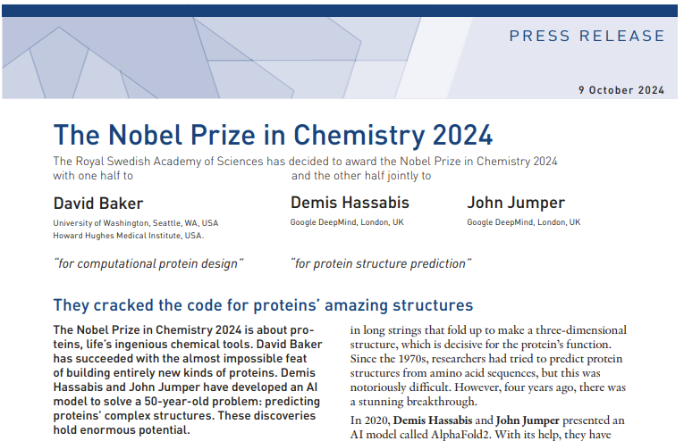

What is Generative AI?
What we call "Generative AI" today is based primarily on what it outputs:
Text generation (ChatGPT, Gemini, Claude, etc.).
Image/video generation (Veo, Sora, etc.).
Molecular/material architectures (AlphaFold 3 - Nobel Prize work!).

https://www.nobelprize.org/prizes/chemistry/2024/press-release/